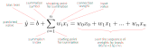
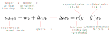
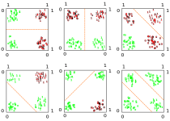

The work of McCulloch and Pitts introduced one of the first biologically inspired models of cognition. This approach was powerful in so far it was able to emulate a wide variety of boolean functions by combining simple binary computational units. However, the architecture lacked several characteristics of biological networks: complex connectivity patterns, processing of continuous values (rather than just binary), and critically, a learning procedure. Further, the fact that brain activity tends to be noisy and seemingly stochastic did not fit well with the consistency and predictability required by the McCulloch and Pitts model to work.
With an eye in all the aforementioned limitations of the early neural network models, Frank Rosenblatt introduced the so-called "perceptron" in 1958. Rosenblatt contextualized his model in the broader discussion about the nature of the cognitive skills of higher-order organisms. On Rosenblatt's (1958) view, three fundamental questions must be answered to understand this phenomenon, which can be summarized as the problems of (1) detection, (2) storage, and (3) the effect of the stored information in further perceptual and behavioral processes.
Rosenblatt delegated the first question to the discipline of sensory physiology, concentrating his attention in the last two. Next, we will examine these problems one by one.
When your brain forms a memory about something, what shape does it take? If brains stored information as computers do, the answer would be straightforward: as patterns of zeros and ones. Unfortunately, figuring this out is not as simple as with human artifacts like digital computers.
According to Rosenblatt, at the time (and I'd argue, to a certain extent today too) they were two approaches to the information storage problem: the coded representations approach and the connectionist approach. The former postulates that sensory information is stored in the form of coded representations or images, with some sort of one-to-one mapping between the sensory stimulus and the stored pattern. As an analogy, think about those shape-matching toys for kids. Let's say you perceived a triangle, then, a triangle-shaped hole would be "carved" in the memory space of your metaphorical "board-brain". Figure 1 shows an example of this process. Once the shape is carved, you would be able to precisely retrieve the information stored in a particular location in the brain, in the same manner, that you can know that a triangle goes in a particular hole in a shape-matching toy just by looking at it. In the brain, this "carved shape" takes the form of precise patterns of connectivity between groups of neurons. So precise, that you should be able to tell the contents encoded in an arrangement of neurons just by looking at how they are wired together. If you think about it, this is the notion that most science fiction movies implicitly adopt: every attempt to "transfer" the contents of the mind into a machine and vice-versa, presumes that such contents are coded in a way so precise that makes them easily identifiable and transferable.
The connectionist approach takes a radically different perspective: there is no such thing as "records" or "images" of any kind in the brain. When you perceive a triangle, no memory of a triangle is "imprinted" in the brain. "That is nonsense" you may be thinking "How could I be able to remember the shape of a triangle if there is no 'image' of a triangle imprinted in my bran?". That is a fair question. According to Rosenblatt, the key is that memories are stored as preferences for a particular "response" rather than "topographic representations". By "response", Rosenblatt meant the electrochemical activity of any group of associated neurons, as well as any behavioral response of the organism as a whole.
Think about it in this manner: there is no unique cluster of neurons, wired in an invariant manner, that "code" the memory of a triangle. What we have instead, is a series of associations among an unprecise set of neurons, that -importantly- "tend to react" in the presence of any stimulus that looks like a triangle. It does not even need to be exactly a triangle: any shape somewhat similar may trigger at least a partial reaction in those neurons (and maybe in a few more or less too). Going back to the shape-matching toy analogy, the coded representation approach needs a perfectly crafted wood board to work, very rigid, where each shape has a corresponding hole in the board; whereas the connectionist approach is more of a collection of Play-Doh balls, where each ball can be roughly molded to match shapes that look roughly similar. This means that if you were trying to guess what kind of shapes can be molded by a particular ball of Play-Doh, you may at best get an answer like "stuff with a couple of pointy edges". Of course, this is a very imprecise analogy intended to capture the idea that there aren't perfectly crafted "blueprints" of perceived stimulus in the brain, but partial and flexible activity patterns loosely related to a certain type of stimulus. Importantly, such associations between stimulus and response patterns are stable enough for learning and recognition to work.
Once memories have been stored in the brain (in whichever way you think it is more appropriate) now we have the question of how such information impacts further perceptual processes and behavioral responses. In other words, once I learned about the triangle shape, how does having such representation in my brain already impact my reaction to it? Note that by "reaction" we mean anything and everything: from unconscious mental processes to any kind of behavioral response.
By construction, the coded representation perspective entails two separate processes: stimulus-recognition ("yes, I've seen this before") and stimulus-response ("how do I react now"). You first need to match the new triangle to the carved triangle shape in your memory-board, and just then you can determine how to react to that. Since the connectivity pattern of neurons is unique to each stimulus, you necessarily have to use a different set of connected neurons to trigger a reaction to the stimulus. Something like a " recognition module" and separate "response module". From a connectionist perspective, the stimulus-recognition and stimulus-response get blended into one. Remember that in this view information is stored as associated patterns of neural activity, this is to say, like stimulus-responses. It follows that the reaction to the new stimulus will use, at least partially, the same activity patterns that stored the information in the first place. No independent recognition and response modules are needed. This will hopefully become more clear when we implement the model in an example.
To build his model, Rosenblatt took advantage of the advances in research about the fundamental properties of the nervous system at the time. In particular, he took elements from the works of Donald O. Hebb, Friedrich Hayek, Albert Uttley, and W. Ross Ashby. Rosenblatt (1958) summarized these principles as follow:
In sum, if you pay close attention to these principles, you may start to see how they fit with the more general perspective about stimulus learning and recognition introduced in previous sections.
The first exemplar of a perceptron offered by Rosenblatt was the so-called "photo-perceptron", that intended to emulate the functionality of the eye. Rosenblatt would make further improvements to the perceptron architecture, by adding a more general learning procedure and expanding the scope of problems approachable by this model. Here, we will examine the structure and functionality of the photo-perceptron, leaving a more extensive examination of later iterations of the perceptron for the next section.
In contemporary neural network jargon, we could classify the perceptron as a partially connected three-layer neural network with two hidden layers and threshold activation units, but such terminology was not adopted until much later. The structure of a photo-perceptron, represented in Figure 2, can be summarized as follows:
The "feedback signals" between the response-units and the association-units are crucial because such signals are the ones allowing the network to learn and self-organize. Feedback can work in two manners:
The first mechanism reinforces signals that contribute to the activation of a response unit. The second mechanism suppresses the signals that do not contribute to the activation of the same response unit. In either case, the goal is to build an association between the triplet of stimulus, association-unit activation, and response-unit activation. In other words, a pattern association mechanism. Rosenblatt provided a very detailed analysis of the properties of several variants of this system, but for our purposes, the key is to understand the following:
This feedback-based learning process is a variant (not an exact implementation) of the so-called "Hebbian learning" mechanism (Hebb, 1949): neurons that fire together, wire together.
At this point, there is a crucial aspect to remark about the photo-perceptron architecture: the same units that trigger the response of a unit A can contribute to triggering the response of unit B. This is relevant as it reveals the fact that different stimulus can be represented by overlapping neural activity. This idea of representations sharing brain topology and functionality is one of the core principles in neural network approaches in cognitive science. Figure 3 shows a simplified example where two output units share a proportion of their source units.
The version of the perceptron that is today most widely recognized as "the perceptron", differs from the original photo-perceptron in a few important ways:
Figure 4 displays a graphical representation of this version of the perceptron. In this depiction, is assumed that each area contains three units that are fully connected, with the flow of information moving forward.
If you open a random textbook or article about the perceptron, the above description is the one you will most likely find. I am mentioning this because is important to emphasize that the perceptron is a more general concept than any particular instantiation of it. Both, the photo-perceptron and the general-purpose perceptron are special cases of the more general learning and recognition system envisioned by Rosenblatt. Nonetheless, the version we are reviewing here is indeed more general than the photo-perceptron. By general, I mean that it was designed with a wider variety of problems in mind, rather than to emulate the function of the eye like the photo-perceptron.
Nonetheless, the perceptron has been used primarily to solve classification problems. A classification problem is any situation where you have a set of classes, for instance, geometrical shapes, like triangles and squares, and you want to build a network to make predictions based on values describing characteristics of the object at hand. For example, you may have a pair of values describing the height and width of an object, and based on that, the network should be able to classify the object in the proper class. In contemporary machine learning jargon, the values describing the objects are usually called "features" or "variables", and the label that you want to predict, "target" or "class".
The way on which a perceptron trained by error-correction achieves its goal is by iteratively adjusting its weights values (i.e., the value of the links connecting inputs and association units), until it finds a set of weights that allow for the separation of classes in the set. To properly understand how the perceptron self-adjust and find "good weights" we first have to understand the mathematical formalism and learning algorithm behind it. Hence, we will defer a thorough explanation for the "Perceptron convergence" section.
Mathematically, the perceptron can be described by:
We will examine each of these pieces one by one.
The linear function that aggregates the input signals for a single neuron or processing unit is defined as:

The $z$ output is used as input for the threshold function $f(\hat{y})$. The $b$ constant added at the beginning, the bias term, is a way to simplify learning a good threshold value for the network. Consider the original threshold function, which compares the weighted sum of inputs to a threshold $\theta$:
Now, if we subtract $\theta$ from both sides we obtain:
Finally, we can replace $-\theta$ with $b$ to indicate "bias", move the $b$ to the front, and we obtain:
Now, the weight for $b$ can be learned along with the weights for the input values. If you omit this "bias term", the perceptron won't be able to learn solutions that don not pass by the origin in $R$ dimensional space. If this does not make sense for you now, worry not. Hopefully, this will become clearer once we review the learning procedure.
The threshold function for the perceptron is defined as:
where $\hat{y}$ is the output of the linear function.
Here we describe what Rosenblatt (1961) defined as an error-corrective reinforcement learning procedure. This was the version analyzed by Minsky and Papert, which probably explains why it was popularized as the standard perceptron. In his 1961 report, "Principles of Neurodynamics", Rosenblatt describes several reinforcement procedures, like monopolar reinforcement, bipolar reinforcement, gamma reinforcement, and others. The most surprising fact about this learning procedure is that is guaranteed to find a set of weights that will produce the right answer for every example, as long such a set of weights exists. Of course, the problem is that for most interesting problems in cognitive science such a set of weights does not exist. When a classification problem consists of "linearly separable" training cases, the set of weights exist, otherwise, it does not. We will learn about this later.
The error-corrective learning rule is as follow:
This can be expresed as:

Note about the learning rate $\eta$: the learning rate has the role of facilitating the training process by weighting the delta used to update the weights. This basically means that instead of completely replacing the previous weight with the sum of the weight + $\Delta$, we incorporate a proportion of the error into the updating process. This makes the learning process more stable over time.
Figure 5 shows an schematic representation of the perceptron with the learning procedure.
The proof that the perceptron will find a set of weights to solve any linearly separable classification problem is known as the perceptron convergence theorem. I will not develop such proof, because involves some advance mathematics beyond what I want to touch in an introductory text. If you are interested in the proof, see Chapter 4.2 of Rojas (1996) or Chapter 3.5 of Bishop (1995).
Nonetheless, we can offer some geometrical intuition of why the perceptron works. Consider a problem with two classes, let's say, albatross and owls. For each bird, we have measurements of their wingspan and weight. Figure 6 plots the hypothetical data in a cartesian plane with weight in the horizontal axis and wingspan in the vertical axis.
From this example, is clear that we can trace a straight line to separate bird species: everything on the left of the dashed line can be classified as an owl, whereas everything at the right as an albatross. This is possible because our sample of owls and albatross are different enough in weight and wingspan that they can be separated using an straight line. Such line is usually called "decision boundary" in machine learning problems.
In two dimensions is easy to visualize a decision boundary, but this can be extended to higher-dimensional problems, with 3, 4 or any number of dimensions, where visualization becomes tricky. Some people say that mathematicians have this trick where they visualize a 3-dimensional space first, then add, let's say, 5 more dimensions, and then shout in their minds "8 dimensions!" until they convince themselves they can see it.
In any case, in higher-dimensional spaces, the decision-boundary is usually called a "hyperplane". The trick now is to find that hyperplane. Mathematically, the solution for a linear classification problem (i.e., to find the hyperplane) is defined as:
The left side of the equation is identical to our definition for the linear aggregation function, which makes sense since the output of the perceptron is determined by this weighted sum.
An algebraic way to express the same idea is that there must be a set of weights that simultaneously satisfy these two inequalities:
$w_1x_1+w_2x_2+...+w_nx_n+b > 0,$ for each input vector belonging to class 1 (albatross)
$w_1x_1+w_2x_2+...+w_nx_n+b \leq 0,$ for each input vector belonging to class -1 (owls)
In vector notation, the above expression is equivalent to:
$w^Tx+b>0, \forall \in {1}$
$w^Tx+b\leq 0, \forall \in {-1}$
By now you may be wondering "What if the examples are not linearly separable? What if I am comparing owls and falcons? Those are very similar. I bet that doesn't work!" And you will be correct. This is what is known as the "linear separability constrain". I will introduce a case where the perceptron works first and then extend on this limitation later.
We will implement the perceptron algorithm from scratch with python and numpy. The goal is to understand the perceptron step-by-step execution rather than achieving an elegant implementation. I'll break down each step into functions to ensemble everything at the end.
The scikit-learn (a python library for machine learning) implementation can be found here. In general, we don't want to re-implemented algorithms that have been thoroughly tested by others, to avoid duplication of work an potential errors in our code. The reason I'm not using sckit-learn to implement the perceptron is that it won't give us any insight about what is going on at the algorithmic level, and I believe that this exercise has pedagogical value. Note I will use matrix notation) instead of summation notation because is the way on which numpy works, but keep in mind that both are equivalent.
import numpy as np
def random_weights(X, random_state: int):
'''create vector of random weights
Parameters
----------
X: 2-dimensional array, shape = [n_samples, n_features]
Returns
-------
w: array, shape = [w_bias + n_features]'''
rand = np.random.RandomState(random_state)
w = rand.normal(loc=0.0, scale=0.01, size=1 + X.shape[1])
return w
Predictions from the perceptron are obtained by a linear combination of features and weights. This is the output of the linear aggregation function. It is common practice to begin with a vector of small random weights that would be updated later by the perceptron learning rule.
def net_input(X, w):
'''Compute net input as dot product'''
return np.dot(X, w[1:]) + w[0]
Here we pass the feature matrix and the previously generated vector of random weights to compute their inner product. Remember that we need to add a weight-value for the bias term at the beginning of the vector (w[0])
def predict(X, w):
'''Return class label after unit step'''
return np.where(net_input(X, w) >= 0.0, 1, -1)
This method implements the threshold function that takes the net-value of the inner product and outputs a 1 if the predicted value is >= 0, and -1 otherwise.
def fit(X, y, eta=0.001, n_iter=100):
'''loop over exemplars and update weights'''
errors = []
w = random_weights(X, random_state=1)
for exemplar in range(n_iter):
error = 0
for xi, target in zip(X, y):
delta = eta * (target - predict(xi, w))
w[1:] += delta * xi
w[0] += delta
error += int(delta != 0.0)
errors.append(error)
return w, errors
Let's examine the fit method that implements the learning rule:
random_weights function with dimensionality equal to the number of columns in the feature matrix.for exemplar in range(n_iter)predict(xi, w) functiondelta = eta * (target - predict(xi, w))w[1:] += delta * xi and w[0] += deltaerrors.append(error)We will test the perceptron by creating a simple example: classifying birds by their weight and wingspan. I will create a synthetic dataset with two species: Wandering Albatross and Great Horned Owl.
If you are wondering how realistic is this classification problem from a psychological perspective, the answer is that it is not. Humans would rarely use only two traits of an animal to make a classification. When categorizing species by their visual features, you would probably consider a high number of features: wingspan, height, color, distance from the beak to the tail, etc. The reason we use this highly simplified example is for the sake of transparency and clarity: we can plot and visualize problems in 2-dimensions. That being said, everything explored here does extend to more realistic scenarios in higher-dimensions (i.e., more features).
Let's first create a function to generate our synthetic data
def species_generator(mu1, sigma1, mu2, sigma2, n_samples, target, seed):
'''creates [n_samples, 2] array
Parameters
----------
mu1, sigma1: int, shape = [n_samples, 2]
mean feature-1, standar-dev feature-1
mu2, sigma2: int, shape = [n_samples, 2]
mean feature-2, standar-dev feature-2
n_samples: int, shape= [n_samples, 1]
number of sample cases
target: int, shape = [1]
target value
seed: int
random seed for reproducibility
Return
------
X: ndim-array, shape = [n_samples, 2]
matrix of feature vectors
y: 1d-vector, shape = [n_samples, 1]
target vector
------
X'''
rand = np.random.RandomState(seed)
f1 = rand.normal(mu1, sigma1, n_samples)
f2 = rand.normal(mu2, sigma2, n_samples)
X = np.array([f1, f2])
X = X.transpose()
y = np.full((n_samples), target)
return X, y
According to Wikipedia, the wandering albatross mean weight is around 9kg (19.8lbs), and their mean wingspan is around 3m (9.8ft). I will generate a random sample of 100 albatross with the indicated mean values plus some variance.
albatross_weight_mean = 9000 # in grams
albatross_weight_variance = 800 # in grams
albatross_wingspan_mean = 300 # in cm
albatross_wingspan_variance = 20 # in cm
n_samples = 100
target = 1
seed = 100
# aX: feature matrix (weight, wingspan)
# ay: target value (1)
aX, ay = species_generator(albatross_weight_mean, albatross_weight_variance,
albatross_wingspan_mean, albatross_wingspan_variance,
n_samples,target,seed )
import pandas as pd
albatross_dic = {'weight-(gm)': aX[:,0],
'wingspan-(cm)': aX[:,1],
'species': ay,
'url': "https://raw.githubusercontent.com/pabloinsente/nn-mod-cog/master/notebooks/images/albatross.png"}
# put values in a relational table (pandas dataframe)
albatross_df = pd.DataFrame(albatross_dic)
According to Wikipedia, the great horned owl mean weight is around 1.2kg (2.7lbs), and its mean wingspan is around 1.2m (3.9ft). Again, I will generate a random sample of 100 owls with the indicated mean values plus some variance.
owl_weight_mean = 1000 # in grams
owl_weight_variance = 200 # in grams
owl_wingspan_mean = 100 # in cm
owl_wingspan_variance = 15 # in cm
n_samples = 100
target = -1
seed = 100
# oX: feature matrix (weight, wingspan)
# oy: target value (1)
oX, oy = species_generator(owl_weight_mean, owl_weight_variance,
owl_wingspan_mean, owl_wingspan_variance,
n_samples,target,seed )
owl_dic = {'weight-(gm)': oX[:,0],
'wingspan-(cm)': oX[:,1],
'species': oy,
'url': "https://raw.githubusercontent.com/pabloinsente/nn-mod-cog/master/notebooks/images/owl.png"}
# put values in a relational table (pandas dataframe)
owl_df = pd.DataFrame(owl_dic)
Now, we concatenate the datasets into a single dataframe.
df = albatross_df.append(owl_df, ignore_index=True)
To appreaciate the difference in weight and wingspan between albatross and eagles, we can generate a 2-D chart.
import altair as alt
alt.Chart(df).mark_image(
width=20,
height=20
).encode(
x="weight-(gm)",
y="wingspan-(cm)",
url="url"
).properties(
title='Chart 1'
)
From Chart 1 is clear that the albatross is considerably larger than the owls, therefore the perceptron should be able to find a plane to separate the data relatively fast.
We have all pieces in place to test the perceptron. Before passing the data by the perceptron, we will shuffle the rows in the dataset. This is not technically necessary, but it would help the perceptron to converge faster.
df_shuffle = df.sample(frac=1, random_state=1).reset_index(drop=True)
X = df_shuffle[['weight-(gm)','wingspan-(cm)']].to_numpy()
y = df_shuffle['species'].to_numpy()
We use the fit function, with a learning rate or $\eta$ of 0.01, which means that it would update the weights by 1% of the total error at each time step. We will run 200 iterations of the algorithm. On each iteration, the entire dataset is passed by the algorithm once.
w, errors = fit(X, y, eta=0.01, n_iter=200)
The perceptron has learned a set of weights to separate the data. Let's compute the classification accuracy by dividing the number of correct predictions by the expected targets.
y_pred = predict(X, w)
num_correct_predictions = (y_pred == y).sum()
accuracy = (num_correct_predictions / y.shape[0]) * 100
print('Perceptron accuracy: %.2f%%' % accuracy)
After 200 runs, the perceptron has reached 99.5% accuracy, meaning that it is misclassifying a single case at this point. Why not 100% accuracy? If you keep "tweaking" the $\eta$ parameter and running more iterations, the perceptron will eventually find the set of weights to get 100% accuracy. Now, let's look at the reduction of error over iterations.
error_df = pd.DataFrame({'error':errors, 'time-step': np.arange(0, len(errors))})
alt.Chart(error_df).mark_line().encode(
x="time-step", y="error"
).properties(
title='Chart 2'
)
As Chart 2 shows, the more iterations, the lower the error. After around 80 time steps, the error reduction starts to oscillate around the same band instead of going down. This does not mean that the perceptron will not continue learning with more iterations. The behavior of the perceptron, and of neural networks more generally, tends to be a bit unpredictable. The perceptron can "get stuck" for a long period of time until suddenly finds better weights and the error drops. Tweaking the $\eta$ is often necessary to reach absolute convergence. Actually, the $\eta$ parameter is partially responsible for the oscillating behavior of the error at every time step. In general, the smaller the $\eta$, the smaller the oscillation, and vice-versa. Smaller $\eta$ values usually come at the cost of slowing down the learning processes. There are a lot of things to be said about the role of the learning rate in neural net convergence, that I will not cover at this point to avoid conceptual overloading. I will say more about it in later chapters.
The most notable limitation of the perceptron is the so-called linear separability constraint. We will explore this limination in the next two examples.
As I mentioned previously in this Chapter, the perceptron is garanteed to find a solution to any classification problem, as long as the problem consist of linearly separable classes. This did not become apparent for Rosenblatt and other researchers at the time, until Minsky and Papert showed, with exquisite detail, the many instances on which the perceptron fails to find a solution. This was not an exercise of cherry-picking difficult problems to test the perceptron and then claim victory. Many of the situations on which the perceptron failed, where almost trivially easy to solve for humans. A famous one is the so-called "XOR" problem. An XOR logic gate (or exclusive OR gate) basically says: when the input patterns are the same, output 1; when they are different, output 0. A visual demostration of why the perceptron can't solve that is on Figure 6

The X-axis and Y-axis reflect the combination of binary features in the XOR problem (0 or 1). When X = Y = 0, the output should be 0, when X = 1 and Y = 0, the output should be 1. The dashed orange line represents the decision boundary generated by the perceptron. The red 1s and 0s represent incorrect classifications; the green 1s and 0s represent correct classifications. As we can see, there is no way to generate a decision boundary capable of classifying all the instances correctly (you can keep trying all possible straight lines, and won't work). The box in the lower right corner shows a case where all instances are correctly classified, but to do that we need two boundaries (or a curvy one) instead of one. There are two possible approaches to tackle this problem: (1) changing the representation of the problem, this is to say, generating some sort of transformation of the inputs into a space that is linearly separable, or (2) using a model that is not restricted to linear decision boundaries, i.e., allowing for non-linearities in the model. We will explore such solutions in later Chapters.
Returning to our previous example, consider the problem of discriminating between the Wandering Albatross and the Andean Condor. Let's repeat the previous steps to reproduce the Chart and test the perceptron one more time.
condor_weight_mean = 12000 # in grams
condor_weight_variance = 1000 # in grams
condor_wingspan_mean = 290 # in cm
condor_wingspan_variance = 15 # in cm
n_samples = 100
target = -1
seed = 100
# cX: feature matrix (weight, wingspan)
# cy: target value (1)
cX, cy = species_generator(condor_weight_mean, condor_weight_variance,
condor_wingspan_mean, condor_wingspan_variance,
n_samples,target,seed )
condor_dic = {'weight-(gm)': cX[:,0],
'wingspan-(cm)': cX[:,1],
'species': cy,
'url': "https://raw.githubusercontent.com/pabloinsente/nn-mod-cog/master/notebooks/images/condor.png"}
# put values in a relational table (pandas dataframe)
condor_df = pd.DataFrame(condor_dic)
df2 = albatross_df.append(condor_df, ignore_index=True)
alt.Chart(df2).mark_image(
width=20,
height=20
).encode(
alt.X("weight-(gm)", scale=alt.Scale(domain=(6000, 16000))),
alt.Y("wingspan-(cm)", scale=alt.Scale(domain=(220, 360))),
url="url"
).properties(
title="Chart 3"
)
From Chart 3 is clear that there is no way to trace a line to separate albatross from condors based on the available features. Let's train the perceptron to test performance on this dataset.
df_shuffle2 = df2.sample(frac=1, random_state=1).reset_index(drop=True)
X = df_shuffle2[['weight-(gm)','wingspan-(cm)']].to_numpy()
y = df_shuffle2['species'].to_numpy()
w, errors = fit(X, y, eta=0.01, n_iter=200)
y_pred = predict(X, w)
num_correct_predictions = (y_pred == y).sum()
accuracy = (num_correct_predictions / y.shape[0]) * 100
print('Perceptron accuracy: %.2f%%' % accuracy)
The perceptron accuracy drops from 99.5% to 91.5%, keeping constant all the steps and parameters, but the values for weight and wingspan (now, the condor ones). Let's try one more time training for longer and with a smaller learning rate.
w, errors = fit(X, y, eta=0.001, n_iter=1000)
y_pred = predict(X, w)
num_correct_predictions = (y_pred == y).sum()
accuracy = (num_correct_predictions / y.shape[0]) * 100
print('Perceptron accuracy: %.2f%%' % accuracy)
Although we trained for 1000 time steps and with a smaller learning rate, the accuracy went up only by 0.5% . This is a reflection of the fact that there is no way to classify all instances correctly, and that finding a good decision boundary is harder. This is also reflected in the error curve in Chart 4.
error_df = pd.DataFrame({'error':errors, 'time-step': np.arange(0, len(errors))})
alt.Chart(error_df).mark_line().encode(
x="time-step", y="error"
).properties(
title='Chart 4'
)
The linear separability constrain is for sure the most notable limitation of the perceptron. Yet, there are a couple of additional issues to be mentioned:
Finally, I want to briefly address a question that you may have asked yourself: "What about stacking multiple layers of perceptrons, maybe that helps with the limitations. We just tried with a single-layer so far!". The short answer is it does not help.
Imagine you have two linear functions defined as:
$$ \psi(x)=wx+b $$$$ \omega(x)=wx+b $$A perceptron with multiple units equals to compose those functions by nesting $\omega$ inside $\psi$:
$$ \omega(\psi(x))=wx+b $$Now, the output of the composed function is still a linear function. You can repeat this function composition as many times as you want, and the output of the last function will be a linear function again. In essence, this is why we don't cover this type of composition with perceptrons: a single layer perceptron is as powerful as any multilayer perceptron, no matter how many layers we add.
With the perceptron, Rosenblatt introduced several elements that would prove foundational for the field of neural network models of cognition. Among them, the introduction of an error-correction training algorithm and updatable real-valued weights were arguably the most important. These would open the door to the creation of self-organizing computing systems, able to solve a wide variety of classification problems, instead of ad-hoc and handcrafted architectures as the McCulloch-Pitts model.
The early enthusiasm surrounding the perceptron would fade fast by both the lack of significant progress during the 60s and the famous Minsky and Papert critique. The so-called linear separability constrain was the product of the kind of mathematical objects that Rosenballt chose for his model: linear functions and step-functions. It is important to remember this because those never were the core of Rosenblatt's idea, but a technical limitation based on the available knowledge that neural network researchers had at the time. The crux of Rosenblatt's idea was to design a self-organizing system serving as a model brain and cognitive function. In Rosenblatt own words:
"A perceptron is first and foremost a brain model, not an invention for pattern recognition. As a brain model, its utility is in enabling us to determine the physical conditions for the emergence of various psychological properties. It is by no means a "complete" model, and we are fully aware of the simplifications which have been made from biological systems; but it is, at least, an analyzable model." (p. viii; bold and italics added by me)
This is not to say that the perceptron could not be used as a pattern recognition device, but such capacity was just a byproduct of the fact that the brain has such capacity, and the perceptron is a -very simplified and incomplete- model of brain function. The fact that the perceptron has been analyzed and criticized as a pattern recognition device says more about the ignorance of the critics about Roseblatt's original work than about Rosenblatt's real intentions.
For code implementation:
The perceptron code is partially based on: